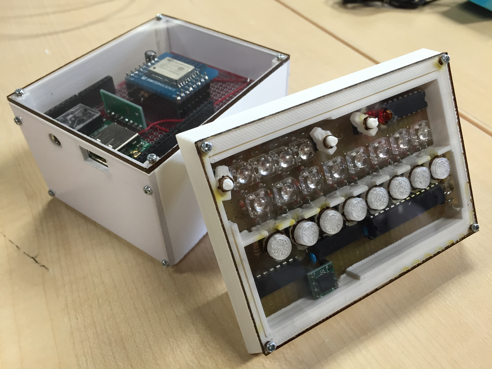
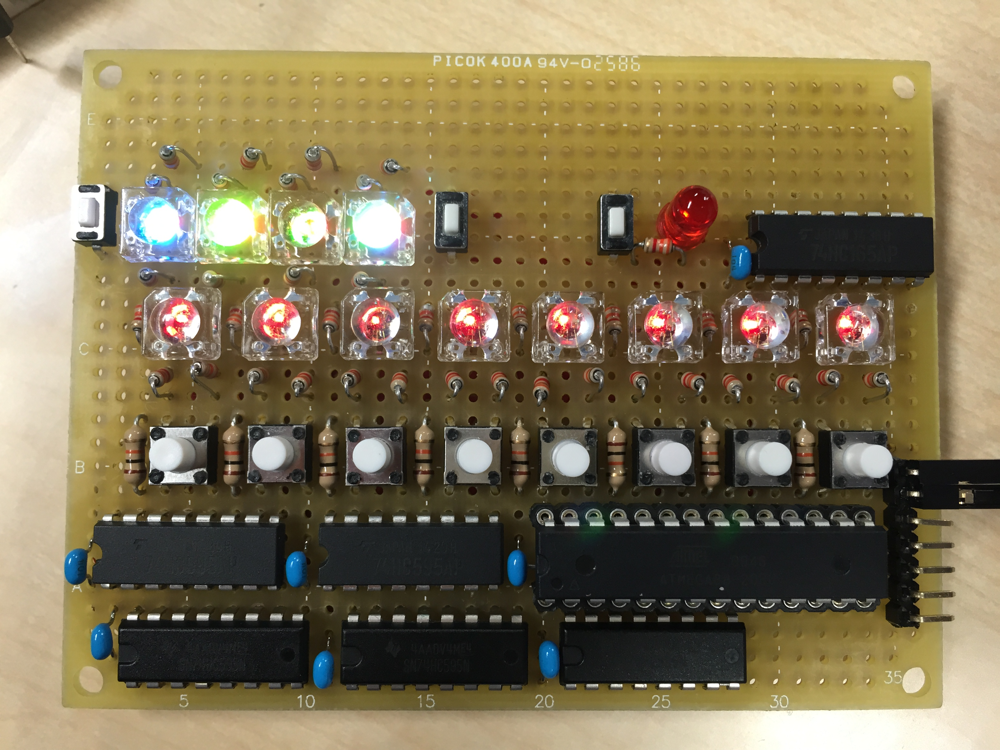
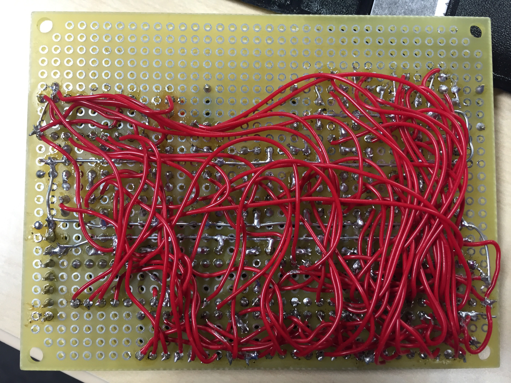

IoT.Synthesizer



気軽に持ち運べるシンセサイザーをコンセプトに作成。
シーケンサーを搭載しており最大四小節まで録音ができ、インタラクティブにループする小節数を変更できる。加速度センサーを搭載しており、傾けることでオクターブを移動することができる。
iPhoneから内部のespにアクセスすることにより音をシンセサイズすることができる。
IoT LT vol.9@GoogleにてLT登壇
- 使用技術
- Arduino
- ESP8266
- html, css
- 制作
- 2015